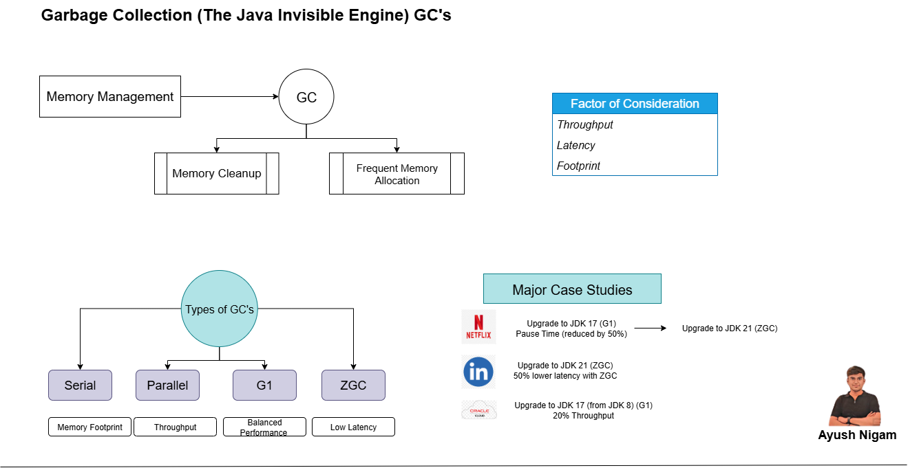

☕ Java’s Invisible Engine: Garbage Collection (GC) 🗑️

🌱 Evolution of Modern Memory Management
✨ One of the biggest performance wins without rewriting code — just by UPGRADE! 🚀
🧹 Memory management is not only cleanup but also reclaim & allocation of new memory. ⚖️ The real magic of modern GC lies in balancing these two opposing jobs.
🧬 Generational Hypothesis
📌 Most objects don’t live long. 🧒 Objects are divided into Young Generation and 👴 Old Generation. 👉 Most cleanup efforts focus on the Young area.
🔥 Choices of GC
-
1️⃣ Serial – 🖥️ Low memory footprint, works well with single-CPU containers.
-
2️⃣ Parallel – ⚡ Best for max throughput (batch operations).
-
3️⃣ G1 – ⚖️ Balanced approach, default since JDK9.
-
4️⃣ ZGC – 🏎️ Ultra low latency for huge heaps & sensitive services.
🤔 Which GC is Best?
It depends on requirements vs trade-offs ⚖️
-
⏱️ Throughput → Total work done over time (e.g., batch job)
-
⚡ Latency → Responsiveness of operations
-
📦 Footprint → Memory overhead of GC (e.g., containers)
📊 Outcome
📈 Upgrading JDK8 ➝ JDK24: - 🚀 Parallel & G1: 25% throughput improvement - ⏳ Latency score improved by 50% (Parallel), and 100% overall - 💾 G1 in JDK24 uses 1/3rd the memory compared to JDK8